Registration complete. Join the WhatsApp group below.
You're registered for:
How 400+ Brands Use AI Funnels to Generate $100K to $300K Monthly
A live session hosted by Adi, founder of Tantra
Payment received: your Tantra RevOps OS is on its way
Your download and the setup guide arrive by email at the address you paid with within a few minutes, from Dodo Payments, our checkout partner. The same files sit in your Dodo customer portal, linked from that email.
Payment reference . Nothing after 10 minutes? Check spam, then ask in the WhatsApp community below.
Your payment is still processing
Some banks take a minute to confirm. Dodo Payments emails you the moment it clears, with your download. Carry on with the two steps below in the meantime.
Your payment did not go through
Nothing was charged. You can try again, or keep your free seat and carry on with the two steps below.
Try again: the Tantra RevOps OS for $99Step 1: join the WhatsApp group
The join link, the reminders and the session resources arrive here first.
Step 2: open your Personal Revenue Plan
Your plan is ready: the traffic you need, the KPI to hit at every stage and the revenue it adds, built from your survey answers.
Answer the 10-question survey and your plan is built from your numbers: the traffic you need, the KPI to hit at every stage and the revenue it adds.
Open my Revenue Plan Answer the surveyWe also email you this link, so you can open it later on any device.
WebinarJam sends your personal join link the moment you register. Open it from that email.
Check your email (and spam). Your personal join link is there.
Sender address FILL_WEBINARJAM_SENDER_EMAIL
A short message from Adi before the session
Video added once it is recorded
FILL_VSL_VIDEO_URLScript: VSL_SCRIPT.md
16 case studies
Your Business Could Be the Next Case Study
Pick your revenue stage and your industry. Then open any case to see where they started, what we built and what changed.
Your revenue a month
Your industry
Showing all 16 case studies
-
 Scale
$15MN ARR
from $1MN to $2MN ARR at the start
Cavli Wireless: Cellular IoT modules and connectivity platform
Scale
$15MN ARR
from $1MN to $2MN ARR at the start
Cavli Wireless: Cellular IoT modules and connectivity platform
 Ajit ThomasSoftware and Tech
Ajit ThomasSoftware and Tech
-
 Scale
80 sales calls booked
from 11 webinars and 765,105 people reached
Growth Idea: UK business-coaching group for owner-led SMBs
Scale
80 sales calls booked
from 11 webinars and 765,105 people reached
Growth Idea: UK business-coaching group for owner-led SMBs
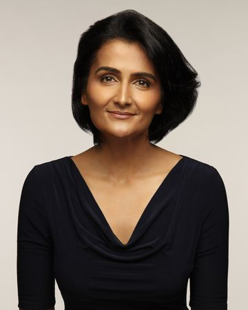
ShwetaCoaching and Training -
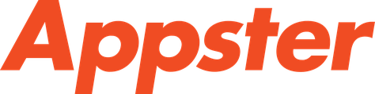
Large $25MN ARR in 2 years 21% of it from B2B social media consulting Appster: Melbourne app development company; Tom now runs Growth Generals Tom AlfoldiAgencies -
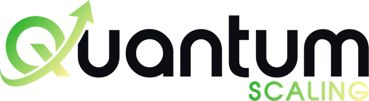
Early $6MN ARR in 3 years grown from scratch Quantum Scaling: Webinar growth systems and coaching for B2B consultants and agencies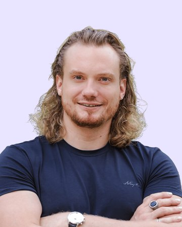
Alexander GesellCoaching and Training -
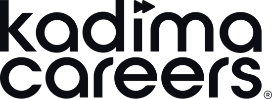
Growth $1.8MN ARR from under $0.5MN ARR Kadima Careers: Career coaching that helps professionals land $150K to $500K+ roles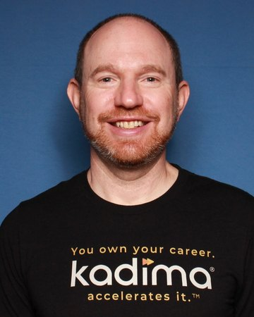
Alan SteinCoaching and Training -
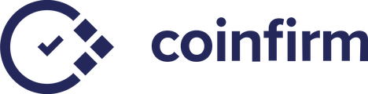
Scale Acquired by Lukka in 2024 after content and outreach became its lead engine Coinfirm: Blockchain AML and analytics for banks, exchanges and regulators Sachin DuttaSoftware and Tech
Sachin DuttaSoftware and Tech
-
 Scale
2x content reach in 2 months
now at $5MN ARR
wxrks: AI translation management platform (formerly Bureau Works)
Scale
2x content reach in 2 months
now at $5MN ARR
wxrks: AI translation management platform (formerly Bureau Works)
 Gabriel FairmanSoftware and Tech
Gabriel FairmanSoftware and Tech
-
Growth
#3 Product of the Day on Product Hunt
the BAMF Bible bundle drove $1MN+ in ARR
BAMF Media: LinkedIn ghostwriting and personal branding agency for founders
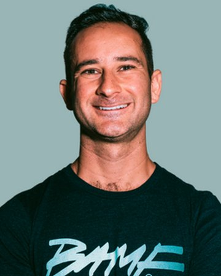
Houston GoldenAgencies -
 Growth
17 sales calls in 3 episodes
plus 175 programme applications
FintechCircle: London fintech network selling a board-readiness programme
Growth
17 sales calls in 3 episodes
plus 175 programme applications
FintechCircle: London fintech network selling a board-readiness programme
 SusanneCoaching and Training
SusanneCoaching and Training
-
Early
21 sales calls from cold
every client came by referral before
Motoz Digital: AI-powered growth agency for B2B SaaS companies
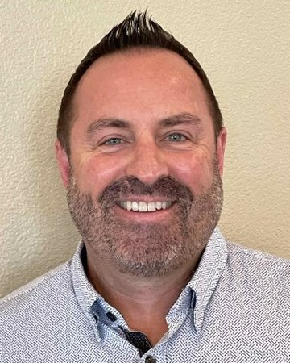
Patrick LundbomAgencies -
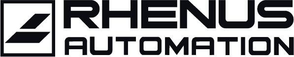
Scale 50+ MQLs in 4 months from a standing start on LinkedIn Rhenus Automation: Intelligent automation (RPA, AI and process mining) unit of the Rhenus Group in Poland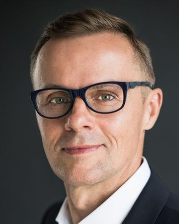
Jacek DudkiewiczSoftware and Tech -
Scale
7x more people live
17 to 127 attendees in 5 webinars
Neural IT: Medical-record review and demand letters for US personal-injury law firms
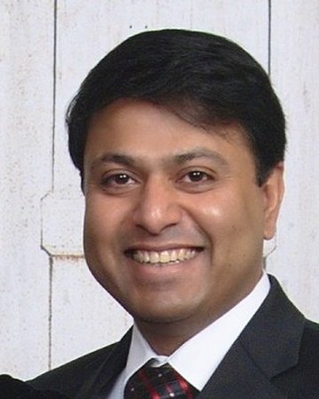
Sailesh PaulConsulting -
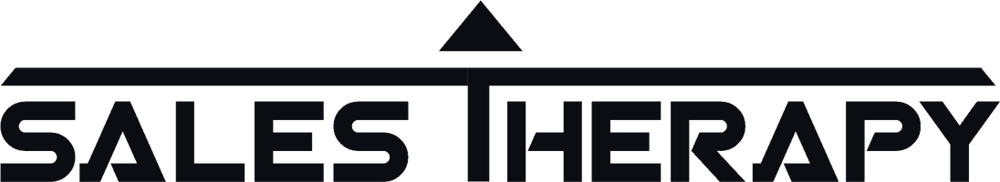
Growth $15K lead value from webinar 1 6 sales calls on the very first webinar SalesTherapy: Sales mentoring and go-to-market for logistics companies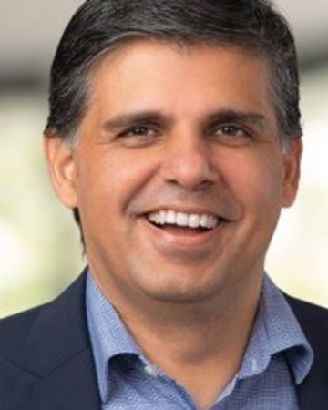
Vivek VanwariConsulting -
 Early
Top Voice on LinkedIn
the founder became a LinkedIn Top Voice
Omniance: AI solution design and strategy for mid-sized companies (formerly cyne.one)
Early
Top Voice on LinkedIn
the founder became a LinkedIn Top Voice
Omniance: AI solution design and strategy for mid-sized companies (formerly cyne.one)
 Marc EichnerConsulting
Marc EichnerConsulting
-
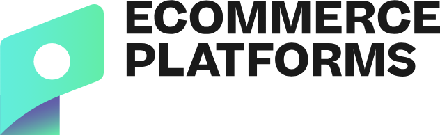
Growth 7MN+ visits a year against a goal of 2MN a year Ecommerce Platforms: Independent reviews and comparisons of ecommerce software Catalin ZorziniMedia and Publishing -
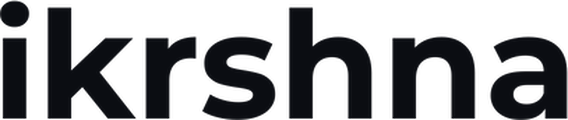
Early #1 on the Kindle Store within 3 weeks of the launch iKrshna: A 520-page book by Anand Kadakol, published by Notion Press in 2019 Anand KadakolMedia and Publishing
Anand KadakolMedia and Publishing
No case study here yet. Yours could be the first one in this spot.
What Clients Say
Gabriel FairmanFounder & CEO, wxrks (formerly Bureau Works) · Forbes Technology Council
“My experience with Adi is that he's very knowledgeable, very on top of his game, very sharp, knows what he's doing, has a ton of strategies and a ton of recommendations. He works really well as a sounding board. I thought he was very flexible and very accommodating. I highly recommend his work.”
 Netwrk.ai
Anand KadakolCo-Founder, Netwrk.ai · Partner, SpringUp Capital
Netwrk.ai
Anand KadakolCo-Founder, Netwrk.ai · Partner, SpringUp Capital
“The whole discussion with Adi was eye opening for me in terms of how one does marketing on LinkedIn. They have an extremely detailed content management process and the empowerment of the team is very high in terms of what the team delivers. I would very strongly recommend using them as a team which can deliver great results.”
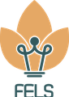
“What stood out to me most was that they had a very structured operation and a vast team with experience in several specialties. Compared to other personal branding agencies, the team has a deep understanding of LinkedIn algorithms and unique growth tools. I would highly recommend this friendly and effective team.”